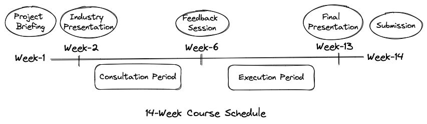

2 Milestones
An industry project is a semester-long activity. These activities will take place in class and out of class. Thus, it follows a comprehensive and continuous assessment. Figure 2.1 outlines typical milestones that students encounter in their courses involving industry projects.

The given project management process in Figure 2.1 considers a course duration of 14 weeks. Students are advised to look into the course syllabus for the exact dates for these milestones.
2.1 Project Briefing
In the first week of the semester, as a part of introducing the course syllabus, instructor will explain a document called project brief. This is an important document regarding your industry project that instructor has prepared in consultation with the industry partner.
The document provides you with the following critical information.
- Client’s name, website, social links, and contact information (e.g., email and phone number).
- Students are suggested to enter client’s contact information into their contact list for future communication with the client.
- An overview of client’s business operation.
- Students are suggested to read this section carefully to ensure they understand what their clients do. In addition, they are encouraged to visit the client’s website to further understand the client’s business operation.
- A detailed description of the business problem.
- Students must read this part carefully to understand specific expectations of the industry project that the client require them to solve, and the instructor will use them for evaluation.
Here is a sample project brief document from one of the clients.
Students are strongly recommended to read the project brief before client’s presentation in the second week of the class.
By the end of the first week, students should have formed project groups.
2.2 Client Presentation
In the second week of the class, client will make a presentation in the class. The presentation includes a brief overview of client’s business model, business problems, and expected outcomes.
Students are expected to come prepared for this presentation based on their understanding of the project brief. Each project group is recommended to ask questions, clarifications, and concerns.
You can ask the following questions during or after the presentation.
- Questions regarding business problems.
- What is the scope of the solutions?
- What is the allocation of marketing budget?
- What are the directions to tackle the business problems?
- What resources/materials/documents that client can provide?
- What are the constraints?
- Questions regarding communication.
- How to communicate with the client?
- What channels to use for communication?
- How to schedule meetings at mutually agreed times?
Here is a sample client presentation from the past semester.
Attendance during client presentations is mandatory.
2.3 Consultation Period
Weeks 2-6 form consultation period. During this week each project group is expected to accomplish the following objectives.
- Regularly meet with client.
- Seek clarification regarding the business problems.
- Ask for additional resources to solve the business problems.
- Discuss possible solutions with client.
- Develop a good understanding of business constraints faced by the client.
- Keep your instructor updated about the progress in project.
- Discuss conceptual/theoretical/analytical approaches taken for business solutions.
- Ask questions or clarifications regarding business problems.
- Ask for relevant academic or business articles related to business problems.
- Each member should participate in consultation sessions with either client or instructor.
- Discuss among group members to form a consensus.
- Divide tasks equally among group members without overloading anyone.
2.4 Feedback Session
There will be a feedback session mid-way through the semester. This will take place typically in week six, just before mid-semester break.
Feedback session will take place in class. Clients, instructors, and students will be present during the session. Each group will be required to make a formal presentation about their progress in the industry project so far.
After the presentation, client and instructor will ask questions and comment on your work. They will provide you with valuable feedback. Each group is expected to act on feedback received during the second half of the semester.
Each project group will also get a chance to ask questions to the client. These questions should help clarify remaining concerns.
Attendance in feedback session is mandatory. Before the feedback session, each group will submit its presentation slides.
2.5 Execution Period
When students come back from mid semester break, the second half of the semester, from weeks 7-12, forms execution period. This is the period where groups put in serious efforts towards key delivarables of the industry project.
During the execution period, students regularly meet with clients and instructors. Groups incorporate their inputs in finalizing their business solutions for the client’s problems. At this stage, depending on the problem statement and scope of the project, groups are also encouraged to collect and analyze data that support their proposed business solutions or business strategies.
During the execution period, following objectives should be met.
- Complete the analysis of additional resources (e.g., data, reports, demo).
- Finalize the proposed business solutions (or strategies).
- Write your report.
- Prepare your final presentation.
2.6 Final Presentation
On the final week of the class, i.e., week 13, your final presentation will take place in the class. Groups are not required to submit their presentation slides in advance.
Each presentation will be followed by a general comment from the industry partner. Typically these comments are not critical. Hence, groups will not be expected to follow up on these comments.
Attendance in final presentation is mandatory.
2.7 Submission
After the final presentation, the instructor will provide a deadline for submitting written project report and presentation slides. You will required to submit them in one of these formats: Word document, PDF, PowerPoint slides. If submission happens in any any other formats (e.g., HTML, markdown, Canva), students are advised to inform the instructor on how to render them properly for easy readability and distribution.
Students from all the groups must submit these documents (report and presentation slides) individually.
RMIT uses Canvas as its learning management system. Students will use it to access learning materials and for all their submission.